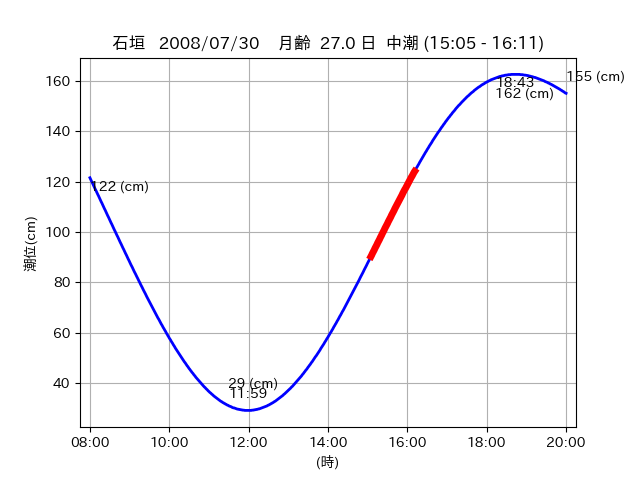

<!DOCTYPE html>
<html>
<head>
    
    <meta http-equiv="content-type" content="text/html; charset=UTF-8" />
    
        <script>
            L_NO_TOUCH = false;
            L_DISABLE_3D = false;
        </script>
    
    <style>html, body {width: 100%;height: 100%;margin: 0;padding: 0;}</style>
    <style>#map {position:absolute;top:0;bottom:0;right:0;left:0;}</style>
    <script src="https://cdn.jsdelivr.net/npm/leaflet@1.9.3/dist/leaflet.js"></script>
    <script src="https://code.jquery.com/jquery-3.7.1.min.js"></script>
    <script src="https://cdn.jsdelivr.net/npm/bootstrap@5.2.2/dist/js/bootstrap.bundle.min.js"></script>
    <script src="https://cdnjs.cloudflare.com/ajax/libs/Leaflet.awesome-markers/2.0.2/leaflet.awesome-markers.js"></script>
    <link rel="stylesheet" href="https://cdn.jsdelivr.net/npm/leaflet@1.9.3/dist/leaflet.css"/>
    <link rel="stylesheet" href="https://cdn.jsdelivr.net/npm/bootstrap@5.2.2/dist/css/bootstrap.min.css"/>
    <link rel="stylesheet" href="https://netdna.bootstrapcdn.com/bootstrap/3.0.0/css/bootstrap-glyphicons.css"/>
    <link rel="stylesheet" href="https://cdn.jsdelivr.net/npm/@fortawesome/fontawesome-free@6.2.0/css/all.min.css"/>
    <link rel="stylesheet" href="https://cdnjs.cloudflare.com/ajax/libs/Leaflet.awesome-markers/2.0.2/leaflet.awesome-markers.css"/>
    <link rel="stylesheet" href="https://cdn.jsdelivr.net/gh/python-visualization/folium/folium/templates/leaflet.awesome.rotate.min.css"/>
    
            <meta name="viewport" content="width=device-width,
                initial-scale=1.0, maximum-scale=1.0, user-scalable=no" />
            <style>
                #map_cf9dacc067b0fd989f44d7c9214c0035 {
                    position: relative;
                    width: 2048.0px;
                    height: 1600.0px;
                    left: 0.0%;
                    top: 0.0%;
                }
                .leaflet-container { font-size: 1rem; }
            </style>
        
</head>
<body>
    
    
            <div class="folium-map" id="map_cf9dacc067b0fd989f44d7c9214c0035" ></div>
        
</body>
<script>
    
    
            var map_cf9dacc067b0fd989f44d7c9214c0035 = L.map(
                "map_cf9dacc067b0fd989f44d7c9214c0035",
                {
                    center: [24.368, 123.962],
                    crs: L.CRS.EPSG3857,
                    ...{
  "zoom": 12,
  "zoomControl": true,
  "preferCanvas": false,
}

                }
            );

            

        
    
            var tile_layer_cf12887507a2afecf775ee7ce932bc47 = L.tileLayer(
                "https://cyberjapandata.gsi.go.jp/xyz/seamlessphoto/{z}/{x}/{y}.jpg",
                {
  "minZoom": 0,
  "maxZoom": 18,
  "maxNativeZoom": 18,
  "noWrap": false,
  "attribution": "\u5730\u7406\u9662\u5730\u56f3",
  "subdomains": "abc",
  "detectRetina": false,
  "tms": false,
  "opacity": 1,
}

            );
        
    
            tile_layer_cf12887507a2afecf775ee7ce932bc47.addTo(map_cf9dacc067b0fd989f44d7c9214c0035);
        
    
            var marker_80382463e749cb97c41a32b009f62130 = L.marker(
                [24.3959, 123.9058],
                {
}
            ).addTo(map_cf9dacc067b0fd989f44d7c9214c0035);
        
    
            var icon_6053d463b52a29acc1a45a995a328827 = L.AwesomeMarkers.icon(
                {
  "markerColor": "blue",
  "iconColor": "white",
  "icon": "info-sign",
  "prefix": "glyphicon",
  "extraClasses": "fa-rotate-0",
}
            );
        
    
        var popup_af67789f9e53da8c5fdd777112875e08 = L.popup({
  "maxWidth": "100%",
});

        
            
                var html_fd248dc59dd9245f0d589aee720e3f37 = $(`<div id="html_fd248dc59dd9245f0d589aee720e3f37" style="width: 100.0%; height: 100.0%;"><table><tr><td></td></tr><tr><td><center>20080730 No.1 </center></table></td></tr></table</div>`)[0];
                popup_af67789f9e53da8c5fdd777112875e08.setContent(html_fd248dc59dd9245f0d589aee720e3f37);
            
        

        marker_80382463e749cb97c41a32b009f62130.bindPopup(popup_af67789f9e53da8c5fdd777112875e08)
        ;

        
    
    
                marker_80382463e749cb97c41a32b009f62130.setIcon(icon_6053d463b52a29acc1a45a995a328827);
            
    
            var marker_d8e09a359e96e65b45aac6f16b4efdf6 = L.marker(
                [24.3723, 123.9515],
                {
}
            ).addTo(map_cf9dacc067b0fd989f44d7c9214c0035);
        
    
            var icon_b5d7840c7f391f93592d23cafe60abab = L.AwesomeMarkers.icon(
                {
  "markerColor": "orange",
  "iconColor": "white",
  "icon": "info-sign",
  "prefix": "glyphicon",
  "extraClasses": "fa-rotate-0",
}
            );
        
    
        var popup_33dbe55c26bef3f858481020ce24afa1 = L.popup({
  "maxWidth": "100%",
});

        
            
                var html_3117e2cc21d549dc034343d4a5c76dc9 = $(`<div id="html_3117e2cc21d549dc034343d4a5c76dc9" style="width: 100.0%; height: 100.0%;"><table><tr><td></td></tr><tr><td><center>20080730 No.2 </center></table></td></tr></table</div>`)[0];
                popup_33dbe55c26bef3f858481020ce24afa1.setContent(html_3117e2cc21d549dc034343d4a5c76dc9);
            
        

        marker_d8e09a359e96e65b45aac6f16b4efdf6.bindPopup(popup_33dbe55c26bef3f858481020ce24afa1)
        ;

        
    
    
                marker_d8e09a359e96e65b45aac6f16b4efdf6.setIcon(icon_b5d7840c7f391f93592d23cafe60abab);
            
    
            var poly_line_b038df703fc1dc8388aaf6f5091b0318 = L.polyline(
                [[24.3723, 123.9515], [24.3691, 123.9532]],
                {"bubblingMouseEvents": true, "color": "#00FFFF", "dashArray": null, "dashOffset": null, "fill": false, "fillColor": "#00FFFF", "fillOpacity": 0.2, "fillRule": "evenodd", "lineCap": "round", "lineJoin": "round", "noClip": false, "opacity": 1.0, "smoothFactor": 1.0, "stroke": true, "weight": 3}
            ).addTo(map_cf9dacc067b0fd989f44d7c9214c0035);
        
    
            var marker_2842ba4edb58c17dcccdaa9e0edc9fca = L.marker(
                [24.3674, 123.9591],
                {
}
            ).addTo(map_cf9dacc067b0fd989f44d7c9214c0035);
        
    
            var icon_408d8730fb20391facdaf0d15a29e674 = L.AwesomeMarkers.icon(
                {
  "markerColor": "orange",
  "iconColor": "white",
  "icon": "info-sign",
  "prefix": "glyphicon",
  "extraClasses": "fa-rotate-0",
}
            );
        
    
        var popup_e0081b5ce6bb401f14b8e9ea1de7b1e2 = L.popup({
  "maxWidth": "100%",
});

        
            
                var html_531440e53987aa8b5623fe2121b99c28 = $(`<div id="html_531440e53987aa8b5623fe2121b99c28" style="width: 100.0%; height: 100.0%;"><table><tr><td></td></tr><tr><td><center>20080730 No.3 </center></table></td></tr></table</div>`)[0];
                popup_e0081b5ce6bb401f14b8e9ea1de7b1e2.setContent(html_531440e53987aa8b5623fe2121b99c28);
            
        

        marker_2842ba4edb58c17dcccdaa9e0edc9fca.bindPopup(popup_e0081b5ce6bb401f14b8e9ea1de7b1e2)
        ;

        
    
    
                marker_2842ba4edb58c17dcccdaa9e0edc9fca.setIcon(icon_408d8730fb20391facdaf0d15a29e674);
            
    
            var poly_line_6e9f2bad247975afca6040d9177a8675 = L.polyline(
                [[24.3674, 123.9591], [24.3696, 123.9654]],
                {"bubblingMouseEvents": true, "color": "#FF00FF", "dashArray": null, "dashOffset": null, "fill": false, "fillColor": "#FF00FF", "fillOpacity": 0.2, "fillRule": "evenodd", "lineCap": "round", "lineJoin": "round", "noClip": false, "opacity": 1.0, "smoothFactor": 1.0, "stroke": true, "weight": 3}
            ).addTo(map_cf9dacc067b0fd989f44d7c9214c0035);
        
</script>
</html>